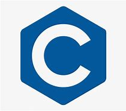
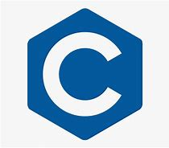

À propos de moi
Bonjour ! Je m'appelle Nesrine, je suis en première année de développement web et applications.
Passionnée par la technologie et le design, j'aime explorer des solutions innovantes et créatives dans le domaine du développement.
Cette année, mes projets que j'ai trouvés les plus intéressants sont les trois suivants :
-
Premier projet : Nous avions 5 jours pour créer un site e-commerce.
Comme je suis passionnée par l'univers des mangas, j'ai décidé de créer un site de vente de goodies, de mangas et d'objets dérivés. Ce projet m'a permis de plonger dans la création d'un site fonctionnel et visuellement plutot simple.
-
Deuxième projet : À partir d'une maquette fournie par notre professeur, nous devions recréer un site.
Bien que ce fût un peu plus compliqué car nous n'avions pas toute la liberté de création, cela m'a permis de mieux comprendre l'importance de respecter un cahier des charges et de travailler avec des contraintes.
-
Troisième projet : Ce projet était libre. J'ai choisi de créer un site pour un restaurant fictif qui propose des spécialités algériennes. Ce fut une belle opportunité pour moi de travailler sur l’aspect visuel et l’ergonomie d’un site de restauration, tout en intégrant des éléments culturels.

.jpg) 
